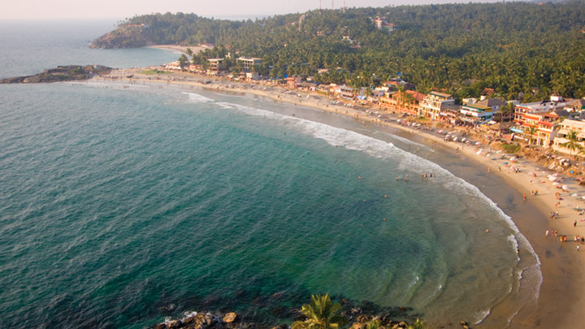

Thiruvanathapuram
Located in the southwestern tip of India, Thiruvananthapuram is bound by the Arabian Sea in the west and Tamil Nadu in the east. Named after Anantha Padmanabha or Lord Vishnu, the city is home to many ancient temples. But the landmark is the Sree Padmanabha Swamy Temple around which the city has been built on seven low hills. The wooded highlands of the Western Ghats in the eastern and northeastern borders give Thiruvananthapuram some of the most enchanting picnic spots. A long shoreline with internationally renowned beaches, historic monuments, backwater stretches and a rich cultural heritage make this district a much sought-after tourist destination. Clean and green, Thiruvananthapuram, the capital of Kerala is one of the most beautiful cities in the country.

Places to visit
KOVALAM

Kovalam is an internationally renowned beach with three adjacent crescent beaches. It has been a favourite haunt of tourists since the 1930s. A massive rocky promontory on the beach has created a beautiful bay of calm waters ideal for sea bathing. The leisure options at this beach are plenty and diverse. Sunbathing, swimming, herbal body toning massages, special cultural programmes and catamaran cruising are some of them. The tropical sun acts so fast that one can see the faint blush of coppery tan on the skin in a matter of minutes. Life on the beach begins late in the day and carries on well into the night. The beach complex includes a string of budget cottages, Ayurvedic health resorts, convention facilities, shopping zones, swimming pools, Yoga and Ayurvedic massage centres.
SHANKHUMUGHAM BEACH

This beach is located 7 km from Thiruvananthapuram Central Railway station and a short drive from International Airport. It is one of the best tourist places in Trivandrum. People come here in the evening to view the sunset, Giant Mermaid statue, some vantage points specifically created for picnickers.
Napier Museum and Zoo

Napier Museum is located inside Trivandrum Zoo which is the oldest zoological garden in India established in 1857 on over 55 acres of land. It also contains Sree Chitra Art Gallery established in 1935 and is one of the best tourist places in Trivandrum. The entire complex is managed by the Department of Museum and Zoos of Kerala. It is a museum of art and history and is named after the former Governor-General of Madras Lord Napier. The architecture of the museum was designed by the consulting architect of the Madras Government. It has a unique architectural style and decoration with a supernatural roof and minarets with a natural air conditioning system. It has unique historical and archaeological pieces. This collection includes sculptures of bronze and stone, wood and ivory carvings, lamp, textiles, life-size Kathakali figures, handicraft items, traditional musical instruments, and other collections of various dynasties of South India.